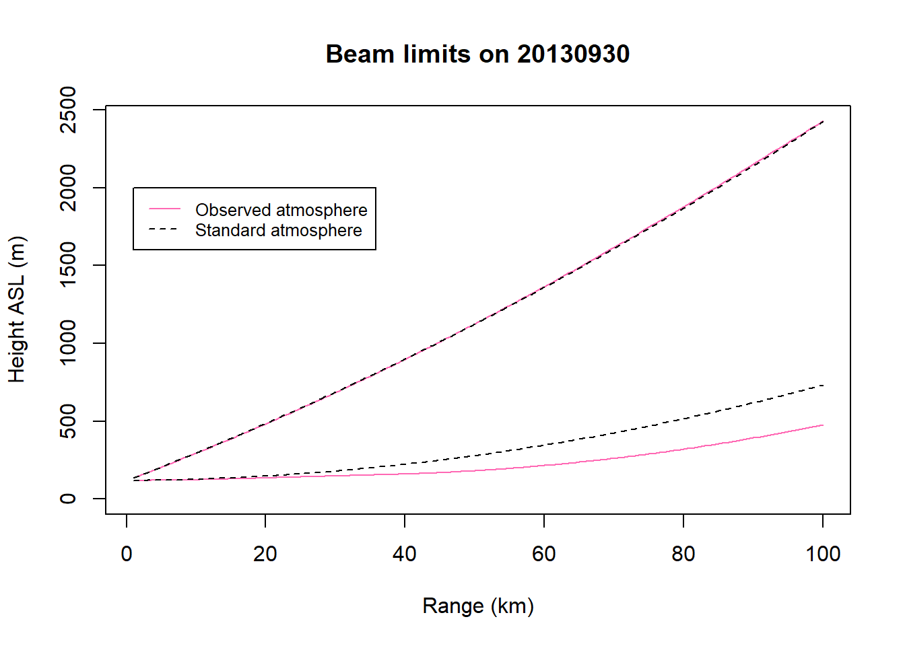

6 Part 6
6.1 Estimating beam propagation using radiosonde data
When radiosonde data are available, it is often adventageous to calculate beam propagation given observed refractive conditions of the atmosphere. The following code allows you to do just that using standard radiosonde files archived here http://weather.uwyo.edu/upperair/sounding.html
Let’s read in several files from the KLWX radar station on different nights that were collected during the onset of nocturnal flight. The following code will chart the limits of the top and bottom of the beam as it travels out from the radar. The beam path using the observed atmospheric data (solid pink lines) is charted along with the beam path in a standard atmosphere (dashed black lines) with refraction following the 4/3 Earth radius model.
for (j in list.files(pattern="\\.htm$")){
radio_n<-j
date<-((substring(radio_n,6,13)))
#read in radiosonde
radio<-read.fwf(radio_n, widths=c(7,7,7,7,7,7,7,7,7,7,7), sep="t", skip=10, n=50, na.strings=c(" "))
colnames(radio)<-tolower(substr(t(read.fwf(radio_n, widths=c(7,7,7,7,7,7,7,7,7,7,7), sep="t", skip=7,n=1)[1,]),4,7))
radio<-subset(radio,!is.na(temp))
beamhtall<-data.frame(range=numeric(),bbeam=numeric(),mbeam=numeric(),tbeam=numeric(),elev=numeric())
###calculate refraction
radio$hght[radio$hght<=0]<-1
radio<-radio[radio$hght>=0,]
if (min(radio$hght)<antht) {radio<-radio[max(which(radio$hght<antht)):nrow(radio),]}
radio<-aggregate(radio,by=list(radio$hght),mean)[,2:ncol(radio)]
radio$watervapor<-6.1078*10**((radio$dwpt*7.5)/(radio$dwpt+237.3))
radio$refractivity <- (77.6/(radio$temp+273.18))*(radio$pres+(4810*(radio$watervapor/(radio$temp+273.18))))
radio$n<- 1+(radio$refractivity/1000000)
n1<-c(0,radio$n[1:nrow(radio)-1])
radio$hght[radio$hght==antht]<-radio$hght[radio$hght==antht]-1
radio$heightb<-c(0,radio$hght[1:nrow(radio)-1])
radio$refindex<-(radio$n-n1)/((radio$hght-radio$heightb)/1000)
radio$theta<-0
radio$arcdist<-NA
radio$a<-0
radio$k<-NA
radio<-radio[!is.na(radio$n),]
elev<-0.50 #tilt angle of beam
range<- seq(from = 1, to= 100, by =0.5)
beamhtall<-data.frame(range=range,bbeam=NA,mbeam=NA,tbeam=NA,elev=elev)
#propagate top, middle, and bottom of beam
for(beam in c(elev*DEG2RAD-halfbeam,elev*DEG2RAD,elev*DEG2RAD+halfbeam)){
#beam<-elev*DEG2RAD-halfbeam ###only for test purposes
mom<-which(beam==c(elev*DEG2RAD-halfbeam,elev*DEG2RAD,elev*DEG2RAD+halfbeam))
radioframe<-radio
####if height<antht
radioframe$a[radioframe$hght<antht]<-(eartha/1000)
radioframe$theta[radioframe$hght<antht]<-((beam)) ###dependent on part of beam
radioframe$thickness[radioframe$hght<antht]<-0
radioframe$arcdist[radioframe$hght<antht]<-0
####if heightb<antht
radioframe$thickness[radioframe$hght>antht & radioframe$heightb<antht]<-(radioframe$hght[radioframe$hght>antht & radioframe$heightb<antht]-antht)/1000
radioframe$theta[radioframe$hght>antht & radioframe$heightb<antht]<-(beam)
####otherwise
radioframe$thickness[radioframe$heightb>antht]<-(radioframe$hght[radioframe$heightb>antht]-radioframe$heightb[radioframe$heightb>antht])/1000
if (min(radioframe$hght)<antht) {radioframe$a<-c(rep(eartha/1000,max(which(!(radioframe$hght>antht)))),eartha/1000+cumsum(radioframe$thickness)[which(radioframe$hght>antht)-1])}
if (min(radioframe$hght)>=antht) {radioframe$a<-c(eartha/1000,eartha/1000+cumsum(radioframe$thickness)[which(radioframe$hght>antht)-1])}
a1<-c(0,radioframe$a[1:nrow(radioframe)-1]) ###lag a
radioframe$thetap[a1*radioframe$refindex<=(-1)]<-asin(sqrt((-2)*(radioframe$thickness[a1*radioframe$refindex<=(-1)])*(1+(radioframe$refindex[a1*radioframe$refindex<=(-1)]*a1[a1*radioframe$refindex<=(-1)]))/(a1[a1*radioframe$refindex<=(-1)])))
radioframe$thetap[!(a1*radioframe$refindex<=(-1))&radioframe$heightb>antht]<-0
###more otherwise
rt<-which(radioframe$hght>antht)
for(i in which(radioframe$heightb>antht)){ radioframe$theta[i]<-atan(sqrt((((radioframe$a[i-1])*sin(radioframe$theta[i-1]))**2)+(2*radioframe$a[i-1]*(radioframe$thickness[i-1])*(1+(radioframe$refindex[i-1]*radioframe$a[i-1]))))/radioframe$a[i-1]*cos(radioframe$theta[i-1]))}
radioframe$arcdist[rt]<-(cos(radioframe$theta[rt])/(1+(radioframe$refindex[rt]*radioframe$a[rt])))*(sqrt(((radioframe$a[radioframe$hght>antht]*sin(radioframe$theta[rt]))**2)+(2*radioframe$a[rt]*(1+(radioframe$refindex[radioframe$hght>antht]*a1[rt]))*radioframe$thickness[rt]))-(a1[rt]*sin(radioframe$theta[rt])))
radioframe$arcdist[radioframe$thetap>0 & radioframe$t1<=radioframe$thetap]<-2*((-radioframe$a[radioframe$thetap>0 & radioframe$t1<=radioframe$thetap]*cos(radioframe$theta[radioframe$thetap>0 & radioframe$t1<=radioframe$thetap])*sin(radioframe$theta[radioframe$thetap>0 & radioframe$t1<=radioframe$thetap]))/((radioframe$refindex[radioframe$thetap>0 & radioframe$t1<=radioframe$thetap]*radioframe$a[radioframe$thetap>0 & radioframe$t1<=radioframe$thetap])+1))
radioframe$k[radioframe$hght>antht]<-(1/(1+(a1[radioframe$hght>antht]*radioframe$refindex[radioframe$hght>antht])))
###############################################################
####make ranges####
radioframe$cumrange<-cumsum(radioframe$arcdist)
radioframe$prevrange<-c(0,cumsum(radioframe$arcdist)[1:nrow(radioframe)-1])
radioframe$prevrange[is.na(radioframe$prevrange)]<-0
##############################################################
####now we're creating beam heights
bb<-radioframe[sapply(range,function(x){min(which(x<=radioframe$cumrange))}),]
bb$range<-range
bb$relrange<-bb$range-bb$prevrange
beamhtall[,1+mom]<-bb$k*bb$a*((cos(bb$theta)/cos(bb$theta+(bb$relrange/(bb$k*bb$a))))-1)*1000+(bb$hght-(bb$thickness*1000))
}###end beam loop
beamhtall<-na.replace(beamhtall, 0)
# calculate beamht for standard atmosphere
beamhtallstd<-beamht_std(range=range*1000, antht=antht, theta=elev, earthr=earthr)
# plot beamhtall (radiosonde) and beamhtstd (w/o radiosonde) to compare
plot(beamhtall$range,beamhtall$bbeam,type="l",col="hotpink",ylim=c(0,max(beamhtall$tbeam)),main=paste0("Beam limits on ",date),xlab="Range (km)", ylab="Height ASL (m)", lty=1)
lines(beamhtallstd$range/1000,beamhtallstd$bbeam, lty=2)
lines(beamhtall$range,beamhtall$tbeam,col="hotpink")
lines(beamhtallstd$range/1000,beamhtallstd$tbeam, lty=2)
legend(1, 2000, legend=c("Observed atmosphere", "Standard atmosphere"),
col=c("hotpink", "black"), lty=1:2, cex=0.8)
}